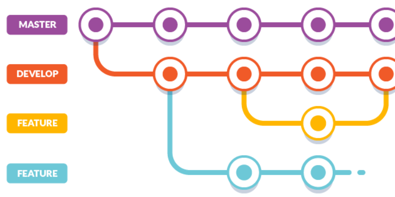
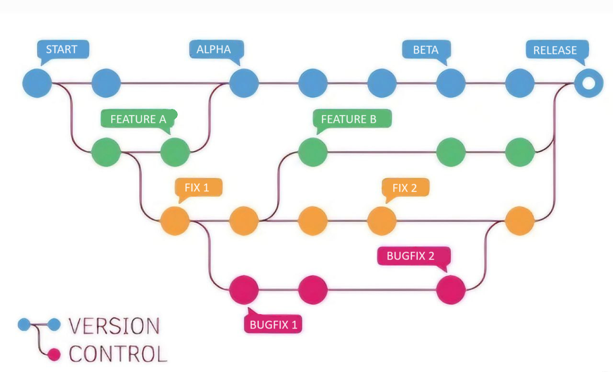
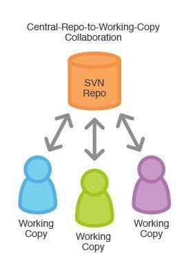
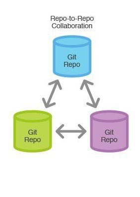

Capítulo 3 .
Git está diseñado para gestionar proyectos de software y otros tipos de documentos de manera eficiente y colaborativa. Aquí están algunos conceptos fundamentales:
Repositorio: Es un espacio donde Git almacena todos los archivos y carpetas que forman parte de tu proyecto.
Clonar: Es hacer una copia exacta de un repositorio remoto en tu máquina local.
Status: Muestra el estado actual de tu repositorio de Git, incluyendo cambios sin confirmar y archivos no rastreados.
Commit: Es un registro de cambios en el repositorio. Cada commit tiene un mensaje que describe los cambios realizados.
Branch (Rama): Es una versión paralela del código principal. Se utilizan para desarrollar funcionalidades nuevas sin afectar el código principal hasta que estén listas.
Merge (Fusionar): Es el proceso de combinar cambios de una rama a otra. Por ejemplo, fusionar una rama de funcionalidad en la rama principal (como
mainomaster).Push (Subir) y Pull (Bajar):
Pushse refiere a enviar cambios locales al repositorio remoto, mientras quePulles obtener cambios del repositorio remoto a tu repositorio local.

3.1 Importancia de Git
¿Porqué es importante saber Git o cualquier otro sistema de control de versiones?
Los sistemas de control de versiones (SCV), como lo es Git, son fundamentales en el desarrollo de software por varias razones clave:
Gestión de Historial: Permiten mantener un registro detallado de todos los cambios realizados en el código y documentos del proyecto. Cada modificación se documenta con un mensaje descriptivo, lo que facilita la comprensión de la evolución del proyecto.
Colaboración Eficiente: Facilitan el trabajo en equipo al permitir que varios desarrolladores trabajen simultáneamente en diferentes aspectos del proyecto. Las ramas (branches) permiten trabajar en nuevas funcionalidades sin interferir con el código principal.
Reversión y Recuperación: Ofrecen la capacidad de revertir cambios no deseados o recuperar versiones anteriores del código en caso de errores o problemas inesperados.
Experimentación Segura: Las ramas permiten probar nuevas ideas de forma segura antes de integrarlas en el código principal, lo que ayuda a mantener la estabilidad del proyecto.
Seguimiento de Responsabilidades: Asignan responsabilidades claras al registrar quién realizó cada cambio y cuándo, lo que facilita la revisión y la resolución de problemas.
Es como en un videojuego donde tienes puntos de control, en el caso de Git serían los commits, a los que puedes volver si te encuentras en un problema y debes andar por otro camino o seguir una estrategia diferente.

En resumen, los SCV son esenciales para mantener la integridad, colaboración y evolución ordenada de los proyectos de software, mejorando la eficiencia y reduciendo el riesgo de errores en el desarrollo.
Existen distintos modelos de SCV, a continuación explicaremos 2 de los más implementados:
Repositorio Central

Es un modelo de control de versiones donde existe un único servidor central que contiene la versión principal del proyecto. Los desarrolladores envían sus cambios directamente a este servidor central.
Características:
Centralizado: Todos los desarrolladores envían y reciben cambios desde el mismo lugar.
Dependencia del servidor: Requiere acceso constante al servidor central para realizar operaciones clave como commits y actualizaciones.
Historial único: El historial completo del proyecto reside en el servidor central.
Repositorio Distribuido

En este modelo cada desarrollador tiene una copia completa del repositorio, incluyendo historial y ramas, en su máquina local. Los cambios se intercambian directamente entre repositorios locales o a través de uno central opcional.
Características:
Descentralizado: Cada desarrollador tiene su propio repositorio completo, lo que permite trabajar sin conexión a internet y facilita la colaboración.
Flexibilidad: Los cambios pueden ser compartidos entre repositorios locales o a través de repositorios remotos.
Ramas y experimentación: Permite a los desarrolladores trabajar en ramas independientes y experimentar sin afectar el repositorio principal hasta que estén listos.
La diferencia clave radica en la arquitectura y la forma en que se gestionan y comparten los cambios. Los repositorios centrales son más tradicionales y dependen de un servidor centralizado, mientras que los distribuidos ofrecen mayor flexibilidad, autonomía y capacidad de trabajo offline.
Git trabaja con el sistema de repositorio distribuido lo que permite que todo el equipo trabaje libremente sin depender de que el servidor central permanezca en condiciones de trabajo.

3.2 Configuración inicial de Git
Para comenzar vamos a configurar nuestro nombre de usuario, así como nuestro correo electrónico, estos van a servir para identificarnos y, más adelante, conectarnos con Github.
El correo no necesariamnete debe estar registrado en Github, sin embargo, para trabajar con esta plataforma es recomendable usar el correo con el que te registraste o vas a registrar en Github, ya que tanto el nombre como el correo sirven para identificar al usuario.
Al iniciar un repositorio, Git crea una rama principal que generalmente es llamada master o main, Por diversas razones ultimamente esta segunda opción se ha vuelto la prferencia, por lo que vamos a establecer main como nombre por defecto de la rama principal:
Con este comando se establece main como nombre por defecto de la rama principal para cualquier nuevo repositorio.
Si prefieres cambiar el nombre de la rama principal, o cualquier otra, puedes usar:
Cambia el nombre [actual] de la rama por el [nuevo] en el repositorio actual sin alterar la configuración.
Para visualizar las configuraciones que tenemos en git, podemos utilizar el comando
Este comando abre el archivo de configuración global de Git en el editor de texto predeterminado para que puedas editarlo.
3.3 Primeros comandos de Git
Para empezar vamos a abrir la terminal, en caso de Windows Git Bash, para presentar los primeros comandos.
Muestra la versión instalada de Git en tu sistema. En este caso contamos con la versión 2.34.1 de Git.
usage: git [--version] [--help] [-C <path>] [-c <name>=<value>]
[--exec-path[=<path>]] [--html-path] [--man-path] [--info-path]
[-p | --paginate | -P | --no-pager] [--no-replace-objects] [--bare]
[--git-dir=<path>] [--work-tree=<path>] [--namespace=<name>]
[--super-prefix=<path>] [--config-env=<name>=<envvar>]
<command> [<args>]
These are common Git commands used in various situations:
start a working area (see also: git help tutorial)
clone Clone a repository into a new directory
init Create an empty Git repository or reinitialize an existing one
work on the current change (see also: git help everyday)
add Add file contents to the index
mv Move or rename a file, a directory, or a symlink
restore Restore working tree files
rm Remove files from the working tree and from the index
examine the history and state (see also: git help revisions)
bisect Use binary search to find the commit that introduced a bug
diff Show changes between commits, commit and working tree, etc
grep Print lines matching a pattern
log Show commit logs
show Show various types of objects
status Show the working tree status
grow, mark and tweak your common history
branch List, create, or delete branches
commit Record changes to the repository
merge Join two or more development histories together
rebase Reapply commits on top of another base tip
reset Reset current HEAD to the specified state
switch Switch branches
tag Create, list, delete or verify a tag object signed with GPG
collaborate (see also: git help workflows)
fetch Download objects and refs from another repository
pull Fetch from and integrate with another repository or a local branch
push Update remote refs along with associated objects
'git help -a' and 'git help -g' list available subcommands and some
concept guides. See 'git help <command>' or 'git help <concept>'
to read about a specific subcommand or concept.
<!-- See 'git help git' for an overview of the system. -->Muestra una lista de comandos disponibles en Git junto con una breve descripción de cada uno y cómo usarlos.
Muestra la documentación detallada y las opciones disponibles para el comando especificado en Git.
3.4 Primer Repositorio [Ejercicio]
Con el material Material y en compañía de los instructores, van a crear su primer repositorio.
En este ejercicio se van a presentar los siguientes comandos:
Este comando inicializa un nuevo repositorio de Git en el directorio actual [Ubicación del directorio], creando un subdirectorio .git con todos los archivos necesarios para el control de versiones.
En la rama main
No hay commits todavía
no hay nada para confirmar (crea/copia archivos y usa "git add" para hacerles seguimiento)El comando muestra el estado actual del repositorio, incluyendo los cambios en el área de preparación y los archivos modificados que no están preparados para el commit.
Añade el archivo/directorio al área de preparación para ser incliudo en el próximo commit, en caso de ser un directorio se agregan tolos los archivos y subdirectorios que contiene.
Agrega todos los archivos nuevos y modificados del directorio actual al área de preparación para el próximo commit.
Deshace los cambios en el archivo/directorio especificado, retirándolo del área de preparación sin modificar el directorio de trabajo.
[main (commit-raíz) 3648c0e] nombre del commit
6 files changed, 604 insertions(+)
create mode 100644 .DS_Store
create mode 100644 css/.DS_Store
create mode 100755 css/bootstrap.min.css
create mode 100644 css/bootstrap/.DS_Store
create mode 100644 css/bootstrap/_media.css
create mode 100644 css/bootstrap/mixins/.DS_StoreRealiza un commit con un mensaje descriptivo especificado en "nombre del commit", guardando los cambios realizados en el repositorio de Git.
Hasta esta parte del ejercicio creaste tu primer repositorio, conociste al área de preparación e hiciste tu primer commit. Quizá ahora tengas una pregunta en mente.
¿Para qué me sirve estar haciendo commit frecuetemente?.
Supongamos que por un fallo se corrompieron los archivos en los que estabas trabajando, o que por error borraste algo que no debías; esta clase de sucesos ocurren con bastante frecuencia pero, con ayuda de Git, podrás recuperar tu información.
El comando git checkout tiene muchas funcionalidades, pero en particular git checkout -- . restaura todos los archivos en el directorio de trabajo a su estado más reciente en el repositorio (último commit), descartando los cambios no confirmados, permitiendo recuperar la información delo último commit realizado, pero esto sólo con los archivos a los que Git les da seguimiento, por lo que es una buena páctica hacer commit con cierta regularidad.
Muestra el historial de commits del repositorio, incluyendo mensajes, autores y fechas.
3.5 Distintas maneras de agregar elementos al Stage
Ya sabemos que con git add podemos agregar uno por uno los elementos que deseamos al Stage (área de preparación), y que con git add . podemos agregar todos los archivos disponibles, pero imagina que modificaste muchos archivos, pero no quieres agregalos todos y hacerlo de uno en uno sería muy tardado.
Puedes agregar archivos con el mismo formata ubicados en el mismo directorio utilizando:
Agrega al Stage todos los archivos .[formato] que se encuentren en el directorio actual, pero no hará nada con los archivos que se encuentren en un subdirectorio.
Este comando agrega los archivos .[formato] dentro de [subdirectorio]/ al Stage.
Agrega todos los archivos modificados del [subdirectorio].
Nota: Git de manera automática ignora los directorios vacíos por lo que, si no tienes cuidado, puede ignorar un fichero importante y llegar a romper tu proyecto, para evitarlo se suele agregar un archivo llamado .gitkeep a las carpetas vacías un archivo especial para que git reconozca que deve hacerles seguimiento.
De esta manera puedes organizar más facilmente los elementos modificados.
3.6 Repaso
Ahora un breve repaso de los comandos que hemos visto hasta ahora.
Configura el nombre de usuario global para todos los repositorios de Git en tu sistema.
Configura el correo electrónico global para todos los repositorios de Git en tu sistema.
Con este comando se establece main como nombre por defecto de la rama principal para cualquier nuevo repositorio.
Cambia el nombre [actual] de la rama por el [nuevo].
Abre el archivo de configuración global de Git en tu editor de texto predeterminado para que puedas editarlo.
Muestra la versión instalada de Git en tu sistema
Muestra una lista de comandos disponibles en Git junto con una breve descripción de cada uno y cómo usarlos.
Muestra la documentación detallada y las opciones disponibles para el comando especificado en Git.
Este comando inicializa un nuevo repositorio de Git en el directorio actual.
Muestra el estado actual del repositorio, incluyendo los cambios en el área de preparación y los archivos modificados que no están preparados para el commit.
Añade archivos al área de preparación para ser incluidos en el próximo commit.
Agrega todos los archivos nuevos y modificados del directorio actual al área de preparación para el próximo commit.
Deshace los cambios en el archivo especificado, retirándolo del área de preparación sin modificar el directorio de trabajo.
Realiza un commit con un mensaje descriptivo especificado, guardando los cambios realizados en el repositorio de Git.
Restaura todos los archivos en el directorio de trabajo a su estado más reciente en el repositorio (último commit), descartando los cambios no confirmados.
Muestra el historial de commits del repositorio, incluyendo mensajes, autores y fechas.
Agrega al Stage todos los archivos .[formato] que se encuentren en el directorio actual.
Este comando agrega los archivos .[formato] dentro de [subdirectorio]/ al Stage.
Agrega todos los archivos modificados del [subdirectorio].
3.7 Alias
Ya conocen los comandos más básicos de Git y seguro han notado que muchos muestran información que generalmente no necesitamos, la gran mayoría de comandos en Git cuentan con etiquetas que permiten mostrar la información de manera distinta a como se hace normalmente pero, como se imaginarán, mejorar la visualización de la información hace que los comandos se extiendan mucho; por ello ahora aprenderán a crear sus propios alias.
Un alias de Git es un atajo personalizado que se configura para simplificar y acortar comandos de Git frecuentemente usados.
Para crear tu propio alias utiliza:
Establece un alias de manera que git [alias] hará lo mismo que git "comando"
Así pueden crear tus propios alias para facilitarse el trabajo.
Un ejemplo muy útil sería:
Veamos el cambio, la salida de status
En la rama main
Cambios a ser confirmados:
(usa "git restore --staged <archivo>..." para sacar del área de stage)
nuevos archivos: java/resourse.java
Archivos sin seguimiento:
(usa "git add <archivo>..." para incluirlo a lo que será confirmado)
java/focus.java
java/init.javaLa salida de s
Como pueden ver, el uso de alias es muy útil, sobre todo con comandos que se usan repetidamente.